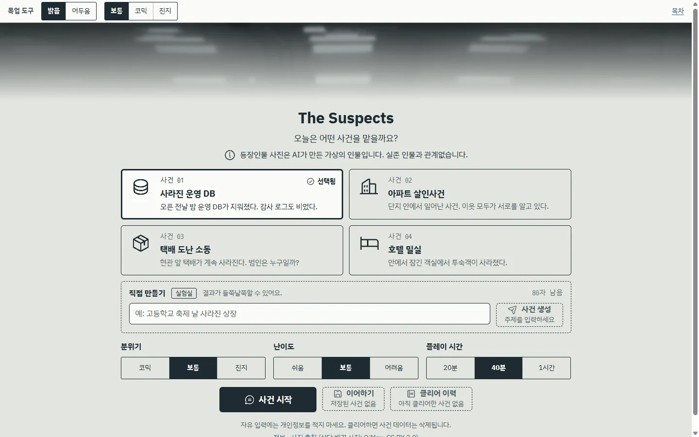
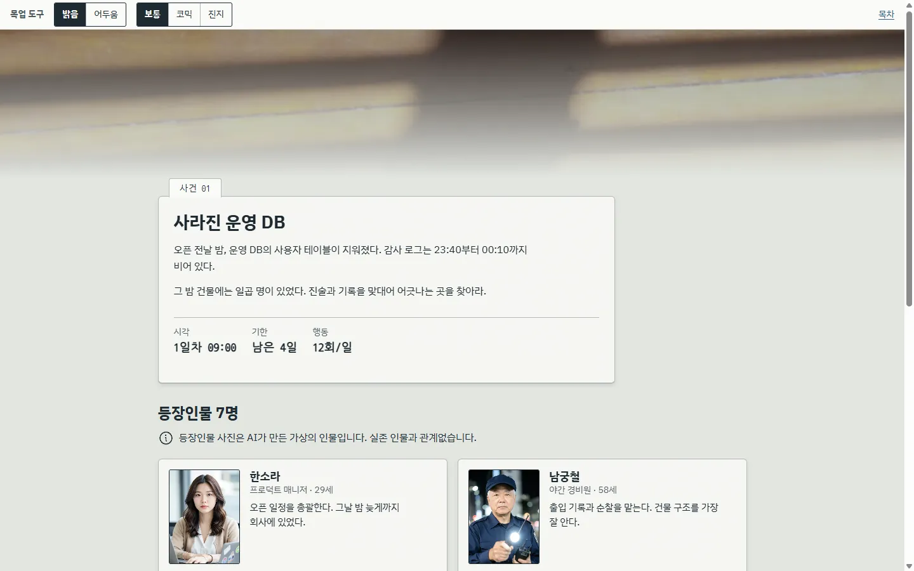
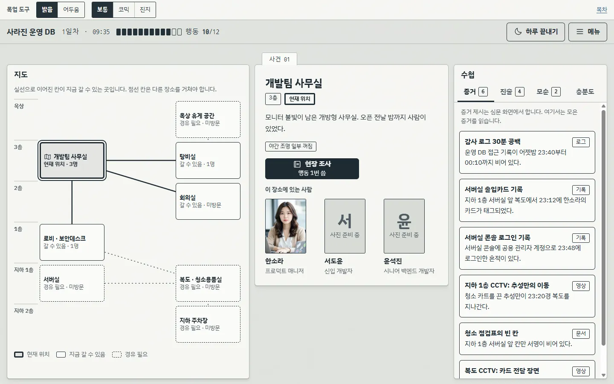
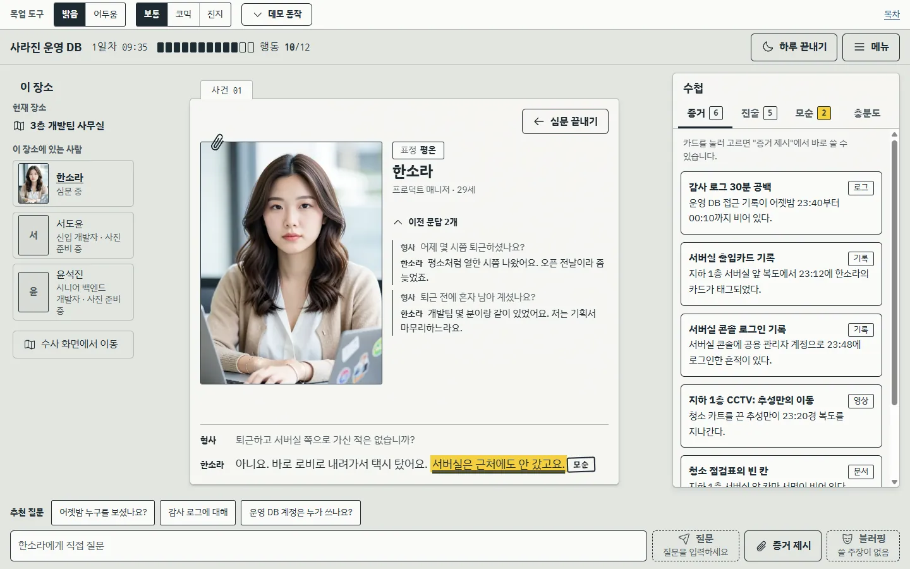
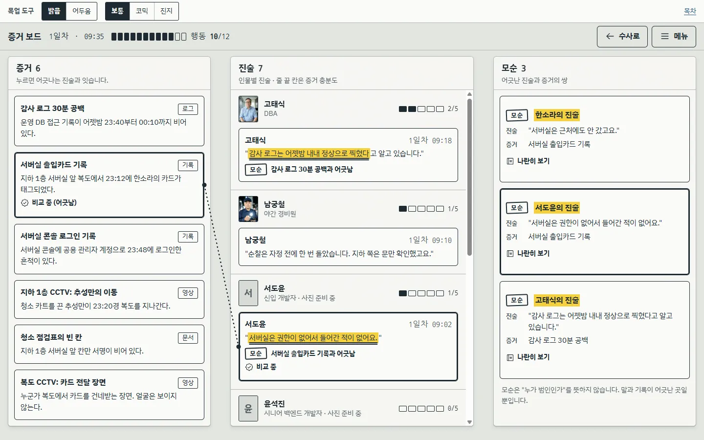
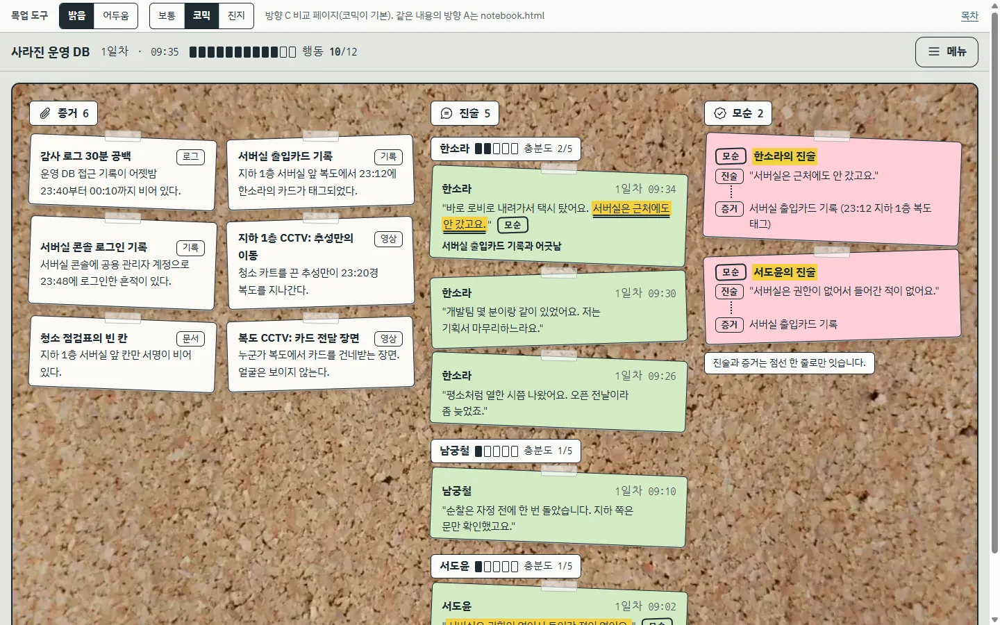
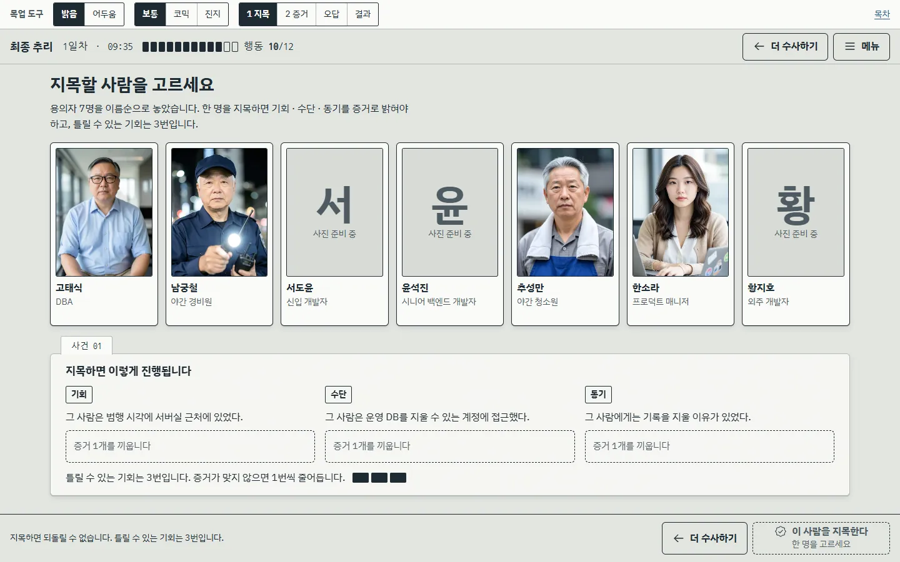
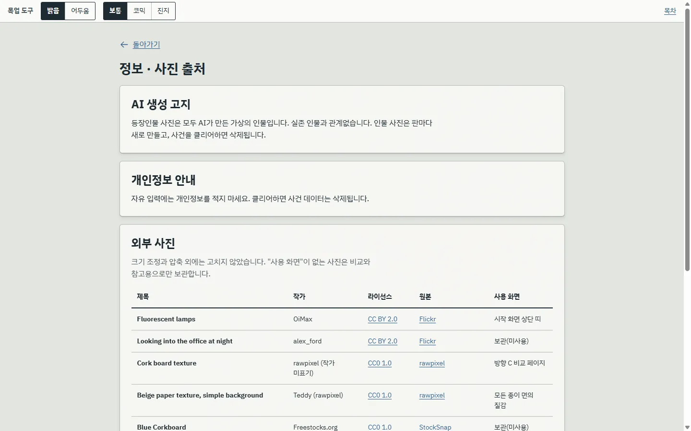

The Suspects 화면 디자인 목업
2026-10-14 · 디자인 회의 결과물. 도구줄에서 테마와 분위기를 바꿔 볼 수 있다. 휴대폰 폭은 브라우저 창을 390px로 줄여 확인한다.
결정 요약
- 콘셉트는 방향 A "수사 기록철". 어두운 테마는 "야간 근무 조사실".
- 읽는 것은 종이, 누르는 것은 바탕. 심문의 사진·이름표·대사는 한 장의 조서.
- 형광은 모순 전용. 형광 띠 + 이중 밑줄 + "모순" 도장 세 겹으로 알린다.
- 일차·시각·행동 수는 상단 상태띠. 새 모순에 수첩 탭을 강제로 바꾸지 않고 뱃지·토스트로 알린다.
- 표정은 사진 크로스페이드 180ms + 표정 글자 칩. 흔들림·확대·이모지 뱃지는 없앤다.
- 주 버튼은 잉크 채움. 막힌 버튼은 회색이 아니라 버튼 안 두 번째 줄에 이유.
- 휴대폰은 하단 행동바 + 수첩·지도 시트. 증거 제시는 탭 두 번(목록, 확정).
- 아이콘은 Phosphor Regular 한 세트(MIT). 분위기 3단계(보통·코믹·진지)는 도형 토큰만 바꾸고 색은 그대로.
- AI 생성 고지는 시작·브리핑에 본문 문장으로. 외부 사진 출처는 정보 화면에.
화면

시작아트 디렉터사건 고르기, 자유 주제, 옵션, AI 고지. 상단 사진 띠.
브리핑아트 디렉터사건 개요, 인물 목록 위 AI 고지, 인물 카드.
수사UX 디자이너장소 지도와 현장 조사, 이 장소의 인물 목록.
심문퍼블리셔기준 화면. 조서, 수첩, 행동바, 표정·모순·증거 제시 데모.
수첩UX 디자이너증거·진술·모순 보드, 충분도.
수첩 방향 C 비교아트 디렉터생활 흔적 방향의 비교용 한 장. 코믹 분위기의 재료.
최종 추리UX 디자이너범인 지목, 기회·수단·동기에 증거 끼우기.
정보아트 디렉터사진 출처, 라이선스, AI 생성 고지.색 토큰
| 토큰 | 밝음 | 어두움 | 지금 테마 |
|---|---|---|---|
--bg | #E3E6E1 | #14191C | |
--surface | #FAFAF7 | #1F272B | |
--ink | #1E2A31 | #E7ECE8 | |
--muted | #4F5B62 | #A3AEB0 | |
--line | #B3BAB5 | #3C494F | |
--line-strong | #1E2A31 | #E7ECE8 | |
--tape (코믹 테이프) | 흰색 55% | 밝은 회색 28% | |
--grain (종이 질감) | 0.05 | 0.03 | |
--hl (모순 전용) | #F4D03F | #E8C547 | |
--cta-fill | #1E2A31 | #E7ECE8 | |
--cta-hover | #33444E | #F4F7F4 | |
--focus | #2F5D8A | #8DB8E3 |
글꼴
IBM Plex Sans KR 700 · 사건 기록철, 모순 발견
IBM Plex Sans KR 400 · 어제는 막차 시간까지 사무실에 있었어요.
Nanum Gothic Coding · 1일차 09:35 · 행동 10/12 · 사건 01
본문 16px, 보조 14px, 제목 18px와 24px. 고정폭은 숫자·시각·번호에만 쓴다.
아이콘 (Phosphor, 23개)
- arrow-left
- bed
- buildings
- caret-down
- chat-circle-text
- check-circle
- database
- floppy-disk
- info
- list
- map-trifold
- mask-happy
- moon
- notebook
- package
- paper-plane-tilt
- paperclip
- paperclip-fill
- seal-check
- seal-check-fill
- sun
- warning-circle
- x